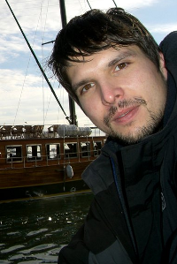

|  |
Matthias König
Junior Group Leader |
Publications
| 2016 | Choi K., Medley JK., Cannistra C., König M., Smith L., Stocking K., and Sauro HM. Tellurium: A Python Based Integrated Environment for Biological Modeling and Simulation [in preparation] Tellurium project | |
| 2016 | König M., Marchesini G., Vilstrup H., and Holzhütter HG. A Multiscale Computational Model Predicts Human Liver Function From Single-Cell Metabolism [in preparation] | |
| 2015 | Kerstin A.*, König M.*, Hoppe A., Thomas M., Müller I., Ebert M., Weng H., Holzhütter HG., Zanger UM., Bode J., Vollmar B. and Dooley S. * equal contribution Pathobiochemical signatures of cholestatic liver disease in bile duct ligated mice BMC Syst Biol. 2015 Nov 20;9(1):83. doi: 10.1186/s12918-015-0229-0 [PubMed] | |
| 2015 | Werner D., Ricken T., Dahmen U., Dirsch O., Holzhütter HG., König M. On the Influence of Growth in Perfusion Dependent Biological Systems - at the Example of the Human Liver. PAMM 15 (1), 119-120, 2015 [doi:10.1002/pamm.201510050] | |
| 2015 | Somogyi ET., Bouteiller JM., Glazier JA., König M., Medley JK., Swat MH and Sauro HM. LibRoadRunner: a high performance SBML simulation and analysis library. Bioinformatics. 2015 Jun 17. pii: btv363. [PubMed] libRoadRunner project | |
| 2014 | Ricken T., Werner D., Holzhütter HG., König M., Dahmen U., Dirsch O. Modeling function-perfusion behavior in liver lobules including tissue, blood, glucose, lactate and glycogen by use of a coupled two-scale PDE-ODE approach. Biomech Model Mechanobiol. 2014 Sep 19. [Epub ahead of print] [doi, PubMed] | |
| 2014 | König M. and Holzhütter HG. Homeostasis of blood glucose - Computer simulations of central liver functions. systembiologie.de 2014; 8:p.53-57 [PDF (de), PDF (en)] | |
| 2013 | König M., Holzhütter HG., Berndt N. Metabolic Gradients as Key Regulators in Zonation of Tumor Energy Metabolism: A Tissue-scale Model Based Study. Biotechnol J. 2013 Apr 16. [Epub ahead of print] [doi, PubMed] | |
| 2012 | König M. and Holzhütter HG. Kinetic Modeling of Human Hepatic Glucose Metabolism in T2DM Predicts Higher Risk of Hypoglycemic Events in Rigorous Insulin Therapy J Biol Chem. 2012 [DOI 10.1074/jbc.M112.382069] | |
| 2012 | König M., Dräger A. and Holzhütter HG. CySBML: a Cytoscape plugin for SBML Bioinformatics. 2012 Jul 5. [PubMed] cy2sbml project | |
| 2012 | König M., Bulik S. and Holzhütter HG. Quantifying the Contribution of the Liver to the Homeostasis of Plasma Glucose: A Detailed Kinetic Model of Hepatic Glucose Metabolism Integrated with the Hormonal Control by Insulin, Glucagon and Epinephrine PLoS Comput Biol. 2012 Jun;8(6):e1002577. Epub 2012 Jun 21. [PubMed] | |
| 2011 | Herling A, König M, Bulik S, Holzhütter HG. Enzymatic Features of the Glucose Metabolism in Tumor Cells. FEBS J. 2011 Jul;278(14):2436-59. [doi, PubMed] | |
| 2010 | König M. and Holzhütter HG. FluxViz - Cytoscape Plug-in for Vizualisation of Flux Distributions in Networks Genome Informatics 2010, Vol.24, p.96-103 [PubMed] cy2fluxviz project | 
|
| 2010 | Gille C, Bölling C, Hoppe A, Bulik S, Hoffmann S, Hübner K, Karlstädt A, Ganeshan R, König M, Rother K, Weidlich M, Behre J, Holzhütter HG. | |